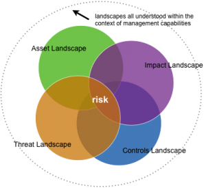

VERIS Overview
But what do we need to know and what do we measure in order to know it? Over the years, there have been many initiatives to amass and share security incident data, but widespread participation and success have been elusive. While there are quite a few reasons for this, at least part of the problem is the lack of a commonly accepted taxonomy. Such efforts are either paralyzed due to equivocality around what to measure or lose traction when data that are collected offer little value because they are based upon incompatible or inadequate systems of classification.
The numbers at each intersection provide a simple way to reference a particular combination of A's. For instance, #1 describes incidents that include an external actor, malware action, server asset, and confidentiality attribute at some point in the event chain. It does NOT necessarily mean that an external actor installed malware that compromised the confidentiality of a server (this is why nonsensical intersections like Malware-People still have #s). In other words, the intersections represent ASSOCIATIONS WITHIN AN INCIDENT, not a direct connection between those specific A's. Note that it is possible to create these direction connections through event modeling using VERIS, but that process is non-trivial and beyond most incident description/reporting needs.

To aid removal of this barrier to more widely available security data, we offer the Vocabulary for Event Recording and Incident Sharing (VERIS) for public consideration and use. VERIS is a set of metrics designed to provide a common language for describing security incidents in a structured and repeatable manner. The overall goal is to lay a foundation on which we can constructively and cooperatively learn from our experiences to better manage risk.
Returning to the question of what we need to know and measure, the diagram presented here is instructive. The domain of information risk can be visually represented as four intersecting landscapes of Threat, Asset, Impact, and Control. The organization’s capability to understand and manage risk requires information from each landscape. Security metrics, then, should create knowledge that improves management’s capability to make decisions and execute on them.
VERIS was designed specifically with this in mind. While surveys, sensors, and other sources can inform risk management, what better source of data exists than first-hand investigation of things that actually went wrong? This is the strength of VERIS – it is rooted in the examination of evidence and post-incident analysis, but designed to provide metrics useful to risk management.